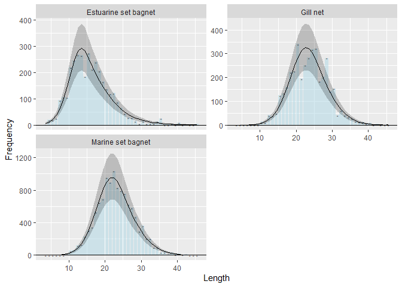
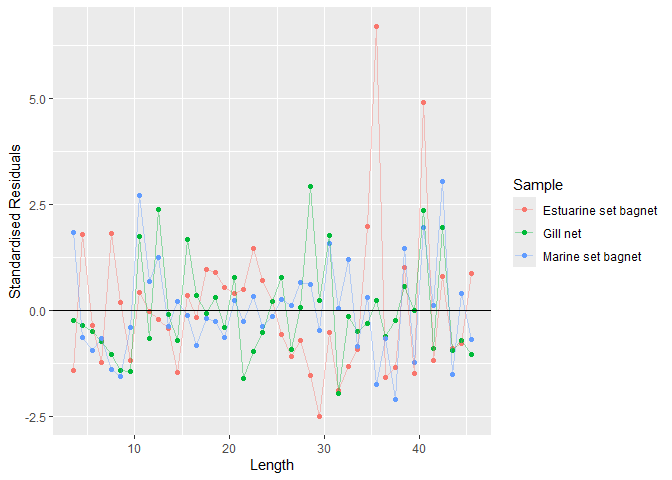
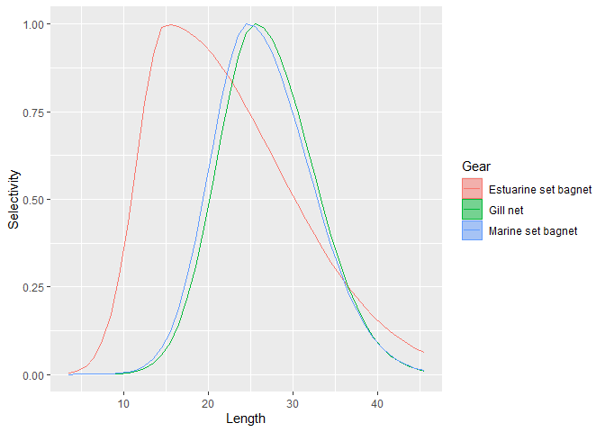

fishblicc provides tools to fit a catch curve model to individual length frequency samples, analogous to an age-based catch curve. However, the model accounts for different length-based selectivities and multiple gears. The model is fitted using MCMC in Stan (mc-stan.org). The approach could be useful for data-limited stock assessments, such as assessing stock status at end of projects where length data have been collected, or continuous monitoring of low-data bycatch species as part of a harvest strategy. The model also provides tools to assess how effective length sampling is in estimating quantities of interest.
Installation
You will need to have Rtools installed so that the model can compile.
For Windows, Rtools can be downloaded from “https://cran.r-project.org/bin/windows/Rtools/”
(also see https://github.com/stan-dev/rstan/wiki/Configuring-C---Toolchain-for-Windows for any issues with this).
You can install the current version of fishblicc:
if (! require("remotes")) install.packages("remotes")
remotes::install_github("PaulAHMedley/fishblicc")Model Description
This is the Bayesian Length Interval Catch Curve to estimate mortality from length frequency samples that form a snapshot of a fishery. This is explicitly a “data-limited” method designed to be used as a risk assessment approach rather than provide definitive information on stock status. The model does not require a data time series, but it assumes that the data are a snapshot of the catch length composition from a fishery in a stationary state. The model can account for multiple gears with different selectivities and has a flexible approach to estimating selectivity, including dome-shaped functions and functions with multiple modes. It is suitable for end-of-project evaluation of length frequency data that may have been collected over a short time period (e.g. a year) or to monitor status of many species that may take up a small proportion of the catches.
Multiple time periods can be fitted for comparison. In this case, fishing mortality is estimated separately for each period, but other parameters such as growth, natural mortality and selectivity (by gear) remain the same.
The method is implemented in R using Stan (mc-stan.org) to carry out the MCMC.
In common with other such methods, there are significant assumptions that will not be fully met in practice, therefore the focus is robustness, trying to account for full uncertainty and looking for ways to reduce the impact of model structural errors or at least spot when such errors may invalidate the results. This is done through a flexible model structure that can account for alternative models for mortality-at-length as well as alternative life history parameters and can be used in a range of sensitivity analyses.
The method can be used to evaluate stock status based on the spawning potential ratio (SPR). In general, this uses the ratio of large (older, mature) fish in a sample compared to small (immature young) fish. If the ratio is small compared to what might be expected in a sample from an unfished population, the population will be at high risk of overexploitation.
The model used here does not convert length to age, but instead accounts for mortality as fish grow through length intervals. The estimation method works by assuming that the von Bertalanffy growth model describes the mean length at age and variation in individual fish growth is governed by their individual maximum length which is drawn from a gamma probability density function (with constant CV). The model is flexible enough to include all data, so, for example, observed lengths above \(L_\infty\) are not rejected. The model allows for the application of piece-wise mortality across length bins, so changing mortality-at-length, such as that due to gear selectivity or decreasing natural mortality with length, can be accommodated.
The model fits the following parameters:
Linf the asymptotic mean length
Galpha the growth model inverse error parameter ( \(CV = Galpha^{-0.5}\) )
Mk the natural mortality in time units of K (growth rate)
Fk the fishing mortality in time units of K (growth rate), one for each fishing gear contributing to fishing mortality
Sm All selectivity function parameters in a single vector, including length location parameters, slope parameters for each parametric selectivity function and mixed function weights.
phi the over-dispersion parameter of the counts in the length bins for the negative binomial.
The following additional fixed parameters are required to calculate the SPR:
\(L_m\) (and \(L_s\)) for the maturity at 50% (and steepness) for a logistic maturity curve.
\(b\) parameter for the length weight relationship \(W=aL^b\) .
The length interval catch curve is used to estimate the spawning potential ratio (SPR). To do this, estimates of length-weight and maturity are required. These generally cannot be estimated from length frequency data, so fixed values from other sources are required. Being data-limited, there are minimum information requirements where defaults can be used if information is not available.
Example
In this basic example, there is a single representative sample of lengths from a three gear fishery. The objective is to estimate the selectivities based on the double-sided normal function as well as determine the stock status. Because this is data limited, it is also valuable to estimate the uncertainty and evaluative how reliable the result is. In a real assessment, multiple configurations with different priors and selectivity functions would be tested.
The analysis consists of fitting the model to the data, determining the spawning potential ratio reference points, and then the expected catch, selectivity and so on by length. (Note that if the fit used the MCMC facility, estimation would take much more time. The more-rapid maximum posterior density estimation is used here.)
These data are taken from a bombay duck (Harpadon nehereus) fishery, where bombay duck are caught predominantly in three artisanal gears. (Note that this is an example only - the analysis is incomplete as trawl catches are missing from these data).
library("fishblicc")
## Prepare some data in the required format
dl <- blicc_dat(
model_name = "Base: Mk ~ Length-inverse",
LLB = 3:45, # Lower boundaries of length bins
fq = list(`Estuarine set bagnet`= c(2,19,19,25,95,106,105,220,246,268,266,185,274,
213,240,206,165,137,119,122,88,65,43,29,27,15,5,
15,5,6,6,14,25,1,1,5,0,9,0,2,0,0,3),
`Gill net` = c(0,0,0,0,0,0,1,14,11,42,38,49,125,133,160,222,226,341,195,
251,283,318,322,183,203,282,142,154,42,62,42,33,28,15,12,
11,6,9,1,4,0,0,0),
`Marine set bagnet` = c(1,0,0,1,1,3,14,54,63,118,130,228,303,344,532,649,
692,954,895,1032,828,793,755,621,581,472,295,362,
208,203,94,95,35,38,13,33,9,18,7,11,0,2,2)), # frequency data
Linf = c(40, 2),
sel_fun = c("dsnormal", "dsnormal", "dsnormal"), # Selectivity functions
Catch = c(0.1802070, 0.2101353, 0.6096577), # Relative catch for each gear
gear_names = c("Estuarine set bagnet", "Gill net", "Marine set bagnet"),
Mk = 2.135019, # Natural mortality prior mean (at reference length)
ref_length = 21.93152, # Reference length for the length-inverse natural mortality model
a = 0.004721956, # Length-weight scale parameter (optional)
b = 3.146168, # Length-weight exponent
L50 = 23.2335 # Length at 50% maturity
)
## Fit the model to these data
slim <- blicc_mpd(dl)
><> Chain 1: Initial log joint probability = -14101.5
><> Chain 1: Iter log prob ||dx|| ||grad|| alpha alpha0 # evals Notes
><> Chain 1: Exception: neg_binomial_2_lpmf: Location parameter[1] is nan, but must be positive finite! (in 'string', line 290, column 6 to column 59)
><> Exception: neg_binomial_2_lpmf: Location parameter[1] is nan, but must be positive finite! (in 'string', line 290, column 6 to column 59)
><> Exception: neg_binomial_2_lpmf: Location parameter[1] is nan, but must be positive finite! (in 'string', line 290, column 6 to column 59)
><> Exception: neg_binomial_2_lpmf: Location parameter[1] is nan, but must be positive finite! (in 'string', line 290, column 6 to column 59)
><> Exception: neg_binomial_2_lpmf: Location parameter[1] is nan, but must be positive finite! (in 'string', line 290, column 6 to column 59)
><>
><> Chain 1: 499 -534.177 0.00168532 1.8609 1 1 563
><> Chain 1: Iter log prob ||dx|| ||grad|| alpha alpha0 # evals Notes
><> Chain 1: 962 -534.172 2.03742e-06 0.0131157 1 1 1071
><> Chain 1: Optimization terminated normally:
><> Chain 1: Convergence detected: relative gradient magnitude is below tolerance
## "slim <- blicc_fit(dl)" to run the full MCMC, but this takes a little time to run.
## Calculate reference points and expected values etc.
rp_res <- blicc_ref_pts(slim, dl)
## If estimating by MCMC, the calculation also takes a little time, so it is often best to save the results
## save(slim, rp_res, file="fishblicc_example.rda") This produces the following objects:
“dl” is the data list containing the length frequency and information for priors used in the fit.
“slim” is a stanfit object and there are useful tools in the package
rstanwhich will allow you to examine the fit.“rp_res” is a list containing the data object used to create it, and three draws objects,
dr_dffor parameters,lx_dffor expected length frequencies andrp_dffor reference points, that can be used by the packagesposteriorandbayesplotto examine results, and the scenario list containing information used to calculate the reference points.
The scenario list is required because of the possibilities of having more than one gear and different gears being operational in different time periods. The list indicates the time period and gears used, a vector vdir giving the ‘direction’ of search for reference points only relevant if there is more than one gear (see documentation) and a data list used for the reference point calculation in rp_df. In the example above, there is only one time period, so only that time period can be used for the reference points.
The priors used by the model can be inspected and produced as a table (or plotted using plot_prior).
blicc_prior(dl)
><> # A tibble: 20 × 6
><> Gear Parameter `Function Type` Mean Mu SD
><> <chr> <chr> <chr> <dbl> <dbl> <dbl>
><> 1 <NA> Linf Normal 40 40 2
><> 2 <NA> Galpha Lognormal 100 4.61 0.25
><> 3 <NA> Mk Lognormal 2.14 0.758 0.1
><> 4 <NA> <NA> Ref. length 21.9 NA NA
><> 5 Estuarine set bagnet Fk Lognormal 0.385 -0.955 2
><> 6 Gill net Fk Lognormal 0.449 -0.802 2
><> 7 Marine set bagnet Fk Lognormal 1.30 0.264 2
><> 8 <NA> Mode Lognormal 15.5 2.74 1.5
><> 9 <NA> Left SD <NA> 0.111 -2.20 1.5
><> 10 <NA> Right SD <NA> 0.0625 -2.77 1.5
><> 11 <NA> Mode Lognormal 23.5 3.16 1.5
><> 12 <NA> Left SD <NA> 0.0816 -2.51 1.5
><> 13 <NA> Right SD <NA> 0.0816 -2.51 1.5
><> 14 <NA> Mode Lognormal 22.5 3.11 1.5
><> 15 <NA> Left SD <NA> 0.0816 -2.51 1.5
><> 16 <NA> Right SD <NA> 0.0625 -2.77 1.5
><> 17 <NA> NB_phi Lognormal 100 4.61 0.5
><> 18 <NA> b <NA> 3.15 3.15 NA
><> 19 <NA> L50 <NA> 23.2 23.2 NA
><> 20 <NA> Ls <NA> 3.51 3.51 NAThe fit results can be inspected.
blicc_results(slim)
><> # A tibble: 19 × 3
><> Parameter `Max. Posterior` SE
><> <chr> <dbl> <dbl>
><> 1 Linf 42.6 1.41
><> 2 Galpha 95.5 25.2
><> 3 Mk 1.96 0.203
><> 4 Fk[1] 1.43 0.987
><> 5 Fk[2] 0.214 1.69
><> 6 Fk[3] 0.463 1.26
><> 7 Sm[1] 15.0 0.974
><> 8 Sm[2] 0.0422 0.00782
><> 9 Sm[3] 0.00298 0.000779
><> 10 Sm[4] 25.5 0.732
><> 11 Sm[5] 0.0238 0.00229
><> 12 Sm[6] 0.0115 0.00184
><> 13 Sm[7] 24.6 0.702
><> 14 Sm[8] 0.0253 0.00208
><> 15 Sm[9] 0.0102 0.00137
><> 16 NB_phi 18.9 4.26
><> 17 Gbeta 2.24 0.564
><> 18 SPR[1] 0.194 0.0731
><> 19 lp__ -534. NAThere are a number of specialized plotting functions specific to length frequency and yield-per-recruit analysis for convenience. This is a plot showing the observed and expected length frequency, with 80% credible interval for the observations (including the expected variation in the data).
plot_posterior(rp_res, gear=1:3) #Plot the results to check the model fit
Figure: Posterior expected frequency
The model’s standardised residuals between the observed and expected length frequency is most useful to identify influential outliers on the edge of the main selected range. Individual length measurements which may be unreliable can affect the fit significantly.
plot_residuals(rp_res) 
Figure: Standardised residuals
Based on this assessment, the marine set bagnet and gill net have almost identical selectivities.
plot_selectivity(rp_res)
Figure: Fitted selectivities
Further steps would be to try alternative selectivity functions, such as the logistic, see whether gill net and the marine set bagnet could share the same selectivity function or propose a more complex function mixture function for the gillnet. The priority would be to see whether any of these changes make much difference to the SPR estimate.